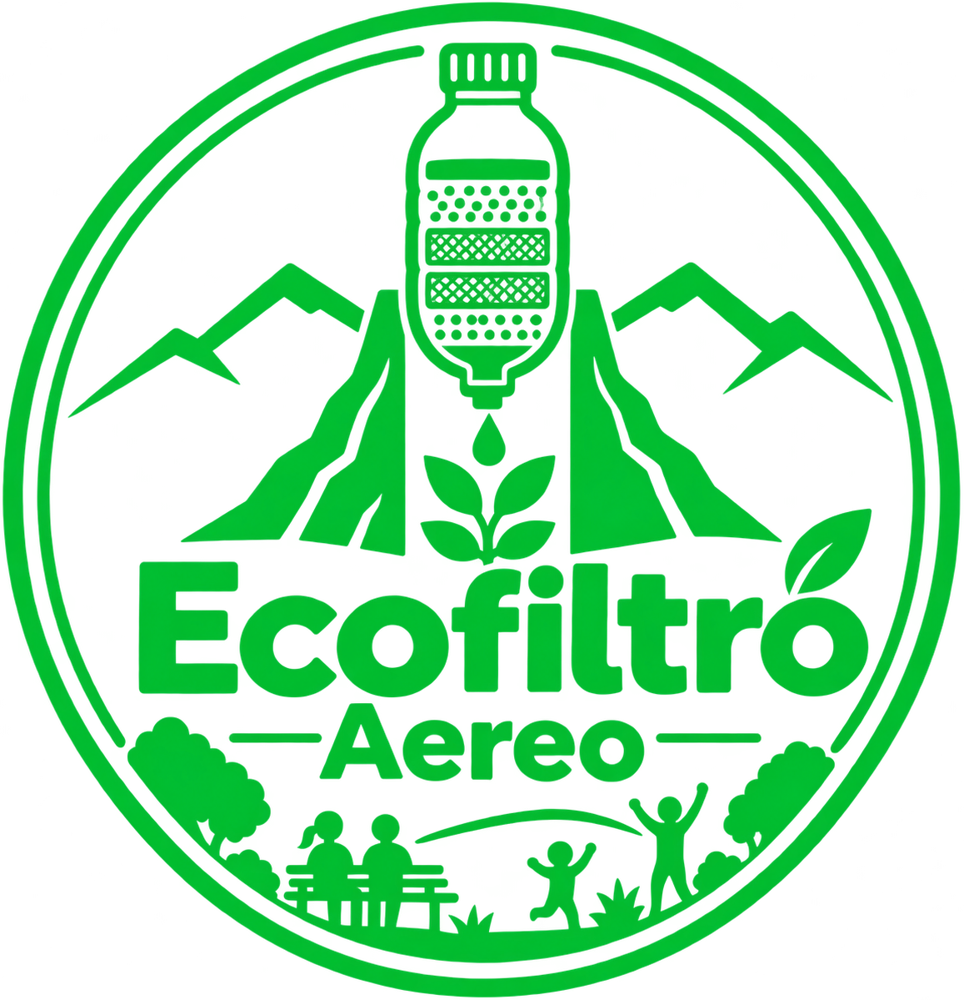

Antes
Documenta el aspecto del agua y el volumen inicial.

EcofiltroProyecto STEM · 2026
Un prototipo escolar que explora la filtración, da una segunda vida al plástico y promueve espacios públicos más limpios.
La idea detrás
Ecofiltro Aéreo nace para observar cómo funcionan los materiales porosos y cómo una acción pequeña —reutilizar una botella— puede abrir una conversación sobre el ambiente.
El proyecto se vincula con el cuidado de parques y la prevención de recipientes que acumulen agua, favoreciendo entornos más limpios para todos.
Ver compromisos del proyecto →El reto
Una botella expuesta a la lluvia puede retener agua y convertirse en un foco de riesgo. Retirar, vaciar o cubrir recipientes es una acción sencilla que sí ayuda.
Así funciona
El agua de prueba atraviesa distintas capas. Durante el recorrido, materiales porosos pueden retener parte de las partículas suspendidas.
Capas del montaje ↘
Ciencia con evidencia
Documenta el aspecto del agua y el volumen inicial.
Anota tiempo, materiales y cualquier cambio observado.
Compara el agua recuperada sin inventar mediciones.
Menos partículas visibles puede indicar retención de sólidos bajo las condiciones probadas. No confirma que el agua sea potable.
Primero, la seguridad
El prototipo es una actividad educativa; no es un sistema de potabilización.
Úsala únicamente como agua de prueba. Que se vea más clara no significa que esté libre de microorganismos o contaminantes disueltos.
No se recolecta entrando a vías ferroviarias. Debe obtenerse de manera autorizada y revisarse antes de incorporarlo.
Evitar agua estancada requiere acciones directas: retirar basura, vaciar o cubrir recipientes y conservar limpios los espacios.
Quienes lo hacen posible
Estudiantes que convierten una idea en observación, aprendizaje y cuidado del entorno.
Una acción a la vez